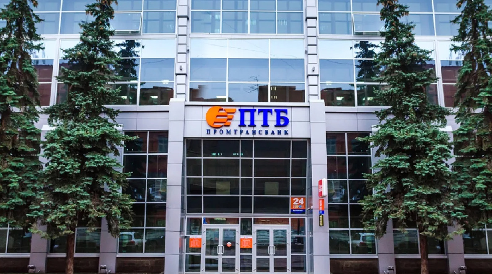
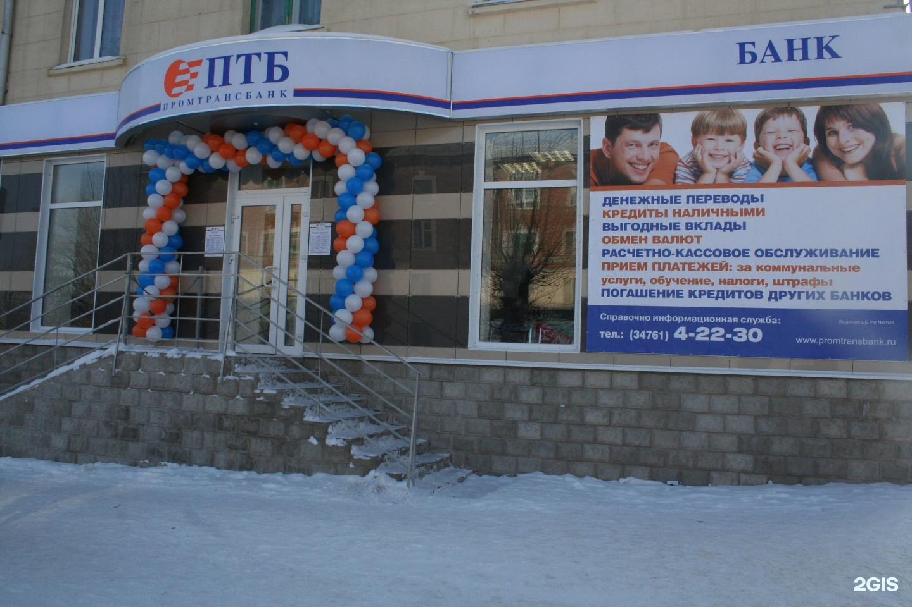

Промтрансбанк
О Промтрансбанке
Банк ПТБ (ООО) основан в 1993 году под названием ТОО КБ «Кембрий».
Банк предоставляет широкий спектр финансовых услуг физическим и юридическим лицам. На 1 января 2023 года филиальная
сеть банка состоит из 17 отделений в городах Республики Башкортостан и офис в г. Москва.
История банка
Банк ПТБ – один из родоначальников банковского дела в Башкортостане. Банк начал свою работу в конце 1993 года всего
с несколькими сотрудниками в небольшом помещении на пятом этаже здания на улице Ленина, 70 в городе Уфе. Тогда Банк
носил название ТОО КБ «Кембрий» и специализировался на обслуживании предприятий народного хозяйства. ПТБ – единственный
банк в г. Уфе, который за всю историю не менял место своего расположения.

В 1998 году изменена организационно-правовая форма и наименование банка. Он стал называться Общество с ограниченной
ответственностью коммерческий банк «Кембрий» (ООО КБ «Кембрий»).
В 2001 банк получил свое современное наименование — «ПромТрансБанк» (Банк «ПТБ»).
Рейтинги
С 2004 года ПТБ активно развивает розничный блок благодаря взвешенной продуктовой политике, высокому уровню сервиса,
внедрению современных технологий и высокой степени клиентоориентированности.
Банк начал целенаправленную работу по выдаче кредитов населению,
а также привлечению депозитов физических лиц. В 2004 году ПТБ одним из первых среди банков республики стал участником системы
добровольного страхования вкладов. В 2007 году ПТБ расширяет сферу своей деятельности, став профессиональным участником рынка
ценных бумаг.
В 2008 году ПТБ вступает в международную платежную систему MasterCard и начинает выпуск пластиковых банковских карт.
С 2009 года Банк стал сотрудничать с такими ведущими системами переводов, как «Золотая корона», «Вестерн Юнион», «ФС Город» и другими.
С 2012 года начинается еще одна важная веха в развитии Банка: создается персонализационное бюро по выпуску собственных
банковских карт, выпускается уникальная карта «ПТБ-Копилка», сочетающая в себе функции сразу четырех карт: транспортной,
бонусной, накопительной и кредитной, запускается система дистанционного банковского обслуживания для физических лиц.
В 2013 году ПТБ в сотрудничестве с международной платежной системой MasterCard приступил к эмиссии бесконтактных международных банковских карт
MasterCard ПТБ с инновационной технологией MasterCard PayPass.
В 2014 году помимо традиционного банковского сервиса ПТБ развивает и весь спектр инвестиционно-банковских, брокерских, депозитарных услуг,
услуг по доверительному управлению активами, включая паевые и инвестиционные фонды, управление крупным частным капиталом.
Несмотря на стремительно повышавшийся уровень конкуренции на банковском рынке республики, ПТБ удалось серьезно увеличить ряд ключевых показателей.
Клиентская база постоянно растет благодаря очевидным преимуществам – уникальной для частного банка сети подразделений, представленной во всех городах
республики, оперативности и скорости принятия решений. Мобильность и гибкость, ежедневный мониторинг продуктов и продаж, качества предоставляемых услуг,
постоянный анализ банковского рынка и экономической ситуации, высоко- профессиональный коллектив, в котором мотивация каждого сотрудника заточена именно
на результат, а не на процесс – все это позволило Банку ПТБ войти в рейтинги лучших розничных кредитных организаций страны.

Одним из главных приоритетов развития Банк ПТБ становится высокое качество обслуживания. Каждый клиент, перешагнувший порог любого из отделений,
сразу попадает в разряд «Очень Важных персон». Мы не делим клиентов по категориям в зависимости от степени их «полезности» или «размера кошелька»:
мы гарантируем равный подход к обслуживанию и одинаково качественные условия.
На протяжении последних лет ПТБ придерживается принципов классического банкинга, что подразумевает надежность и аккуратность обращения со средствами
вкладчиков и разумный, взвешенный подход к кредитованию. Сочетание таких подходов дает основание для принятия правильных оперативных и стратегических
решений, позволяет Банку достигать плановых показателей и не участвовать в сомнительных сделках. Сейчас ПТБ предоставляет свои услуги в 16 населенных
пунктах, в числе которых все города РБ и Москва.
На новом этапе развития ПТБ позиционирует себя как кредитная организация для населения, малого и среднего бизнеса. В своей повседневной работе Банк
учитывает потребности каждого клиента и предлагает ему именно те продукты и услуги, которые нужны в данный конкретный момент времени. От идеи продукта
до его реализации, благодаря высокому профессионализму коллектива Банка, проходит кратчайший период времени – не более 2-3 недель. Благодаря этому наши
продукты всегда актуальны, наши ставки всегда интересны населению и бизнесу.
Как итог, за 30 лет ПромТрансБанк стал одним из самых узнаваемых и популярных банков в Республике, заслужил доверие сотен тысяч клиентов.
ПТБ вносит значительный вклад в развитие экономики Республики Башкортостан, активно участвует в реализации национальных и региональных проектов.
В кредитном портфеле Банка представлены предприятия дорожно-строительного сектора, промышленности, АПК и торговли.
Банк является действующим членом организаций, ставящих своей задачей развитие и усовершенствование банковского рынка России, таких, как Ассоциация
банков России (Ассоциация «Россия»), Ассоциация кредитных и финансовых организаций Республики Башкортостан.
Банк ПТБ – социально активная организация, поддерживающая благотворительные программы помощи детям, нуждающимся в лечении и реабилитации.
Банк всегда поддерживает инициативы, направленные на поддержку детства, организацию благотворительных концертов, развитие художественной культуры,
и считает, что вклад в данные направления положительно отражается на воспитании молодежи и способствует ее ориентации на правильные жизненные ценности.
Сегодня Банк ПТБ предлагает предпринимательскому сообществу Республики оптимальные варианты кредитования, выгодные условия расчетно-кассового обслуживания,
гибкие тарифы, низкие процентные ставки, быстрое рассмотрение заявок, персональный подход, учитывая возможности и требования наших клиентов.
Достигнутые результаты говорят о правильно выбранном пути стратегического развития Банка, о дальнейшем динамичном развитии в интересах бизнеса и
населения всей Республики Башкортостан.
23.06.2023 года рейтинговое агентство «НРА» присвоило кредитный рейтинг банку на уровне «В-|ru|» по национальной
рейтинговой шкале для Российской Федерации, прогноз по рейтингу «стабильный».
Достижения
Банк стал победителем всероссийского конкурса «Лучшая банковская программа для МСП 2022» в рамках национальной
премии в области предпринимательской деятельности «Золотой Меркурий» в номинации «Стабильность и эффективность»
за собственные кредитные программы для малого бизнеса с плавающей ставкой.
На 1 января 2024 года территориальная сеть банка включает 17 отделений в городах Республики Башкортостан и офис в г.Москва.
Основные события, произошедшие в 2023 году:
- Банк ПТБ осуществлял реализацию нового карточного продукта – кредитную карту «112 дней без %» МИР с кешбэком.
- Банк ПТБ развивал сервис «Цифровой профиль гражданина», который позволяет гражданам использовать на официальном сайте Банка алгоритм предоставления о себе сведений в электронном формате через личный кабинет Единого портала госуслуг.
- Банк ПТБ запустил новую программу потребительского кредитования «Год без процентов».
- Банк ПТБ стал победителем Всероссийского конкурса «Лучшая банковская программа для МСП - 2023» в рамках Национальной премии в области предпринимательской деятельности «Золотой Меркурий» в номинации «За развитие региональной экономики», представив собственные кредитные программы с плавающей ставкой и пакеты услуг РКО для малого бизнеса.
- Банк ПТБ осуществлял кредитную поддержку субъектов малого и среднего бизнеса на льготных условиях с государственным субсидированием процентной ставки согласно Постановлению Правительства Российской Федерации от 30.12.2018 №1764.
- Банк ПТБ усовершенствовал реализуемую программу обслуживания номинальных счетов граждан, находящихся в государственных учреждениях социального обслуживания Республики Башкортостан.
- Банк ПТБ проводил финансовое просвещение трудовых коллективов ФОИВ при поддержке Российского общества «Знание».